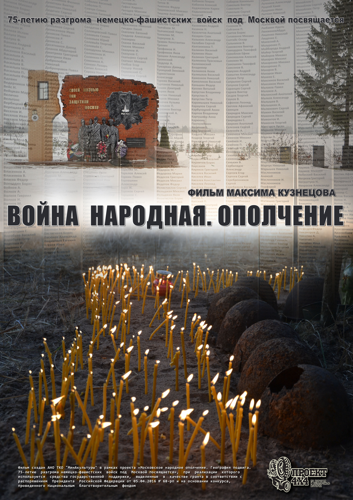
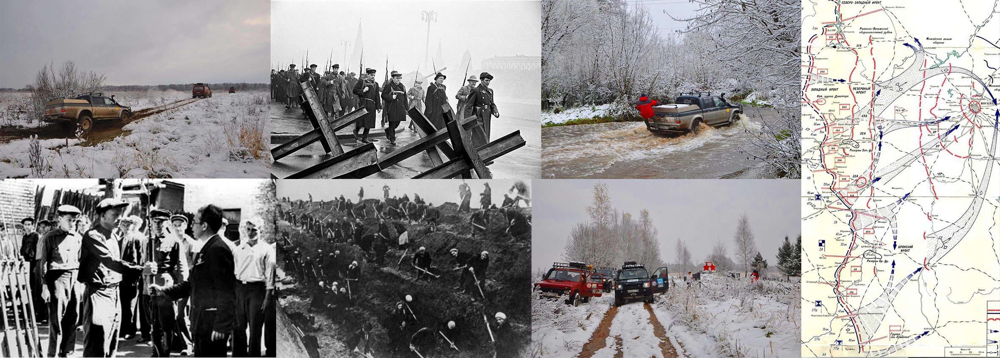
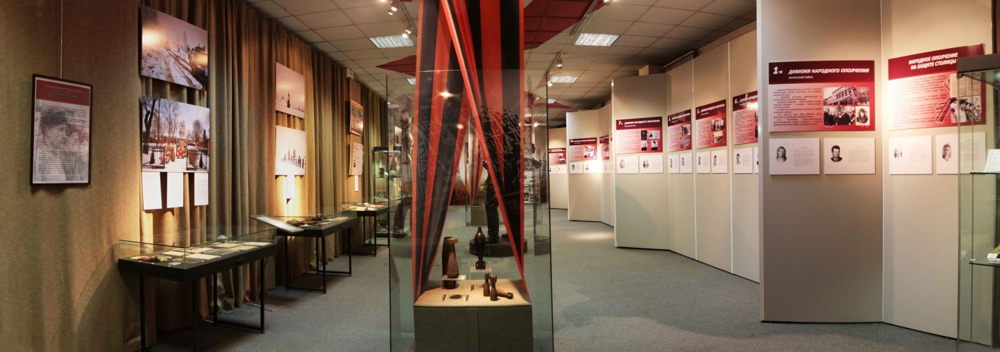

При реализации проекта использовались средства государственной
поддержки, выделенные в качестве гранта в соответствии с
распоряжением Президента Российской Федерации от 05.04.2016 № 68-рп
и на основании конкурса, проведенного Национальным благотворительным
фондом.

Грант: № 311/42-2. Поддержка поискового движения в целях
увековечения памяти погибших защитников Отечества и сохранения
воинской славы России. Сроки реализации проекта: октябрь 2016 г. –
июль 2017 г. Руководитель проекта:
Кузнецов Максим Сергеевич.
-
Выполнена поисково-исследовательская работа с целью изучения
материалов в военных архивах и архивах музеев Великой
Отечественной войны, изучения переписки и материалов из личных и
семейных архивов потомков участников Московского народного
ополчения. В частности, изучались материалы из фондов:
- Государственного музея обороны Москвы (ГМОМ),
- Центрального архива Министерства обороны РФ (ЦАМО РФ),
-
Российского государственного архива общественно-политической
истории (РГАСПИ),
-
Центрального архива общественных движений Москвы (ЦАОДМ),
-
Центрального государственного архива истории политических
движений Санкт-Петербурга (ЦГАИПД СПб),
- Государственного архива Белгородской области (ГАБО),
- Государственного архива Воронежской области (ГАВО),
-
Государственного архива общественно-политической истории
Воронежской области (ГАОПИ ВО),
-
Государственного архива общественно-политической истории
Курской области (ГАОПИ КО),
-
Государственного архива социально-политической истории
Тамбовской области (ГАСПИ ТО),
-
Центра документации новейшей истории Липецкой области (ЦДНИ
ЛО).
-
На основе информации, полученной в ходе поисково-исследовательской
работы, сформированы маршруты, график передвижения и легенда
внедорожной экспедиции по местам боев дивизий Московского
народного ополчения 1941 – 1942 гг. и были проведены внедорожные
экспедиции по местам боев дивизий Московского народного ополчения.
Во время проведения внедорожной экспедиции по маршрутам
передвижения и местам боев дивизий Московского народного ополчения
проведена съемка материалов для создаваемого документального
фильма «Война народная. Ополчение». Во время внедорожной
экспедиции сделано более 300 фотографий, лучшие из которых были
использованы при подготовке в Государственном музее обороны Москвы
экспозиции, посвященной Московскому народному ополчению. По итогам
исследования и проведенной экспедиции подготовлен и выпущен
сборник «Война народная, Ополчение» с материалами о Московском
народном ополчении (110 стр., с иллюстрациями).
-
Создан документальный фильм «Война народная. Ополчение». В
Государственном музее обороны Москвы была подготовлена и
развернута экспозиция, посвященная Московскому народному
ополчению.

8 июня 2017 года в Государственном музее обороны Москвы (Мичуринский
проспект, Олимпийская деревня, д. 3) состоялась премьера
документального фильма "Война народная. Ополчение". На премьеру были
приглашены школьники, студенты, ветераны войны и труда, участники
поисковых отрядов, а также работники киноиндустрии – продюсеры,
режиссеры, кинокритики. Перед началом показа зрители ознакомились с
выставкой, развернутой в одном из залов музея. Выставка посвящена
Московскому народному ополчению 1941 года, в ее экспозиции
представлены фотографии, сделанные во время внедорожной экспедиции
по местам сражений под Москвой. Фильм «Война народная. Ополчение»
используется при проведении экскурсий и лекций в Государственном
музее обороны Москвы. Сразу после премьерного показа фильма «Война
народная. Ополчение» по просьбе руководства Студенческого поискового
отряда МГУ «Вымпел-поиск» в торжественной обстановке родственнице
ополченца Духова В.Е. Екатерине Духовой был передан личный медальон
ополченца, найденный поисковиками вместе с останками бойца.
Цели и задачи проекта «Московское народное ополчение. География
подвига. 75-летию разгрома немецко-фашистских войск под Москвой
посвящается» полностью достигнуты.

© АНО ТКО «МинАкультуры», 2017г.